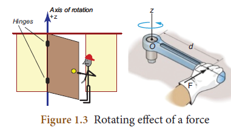
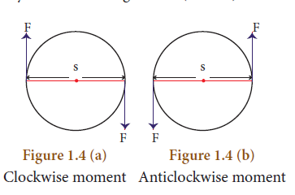
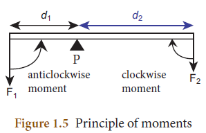
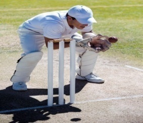
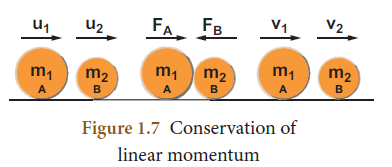
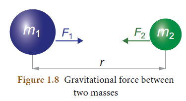
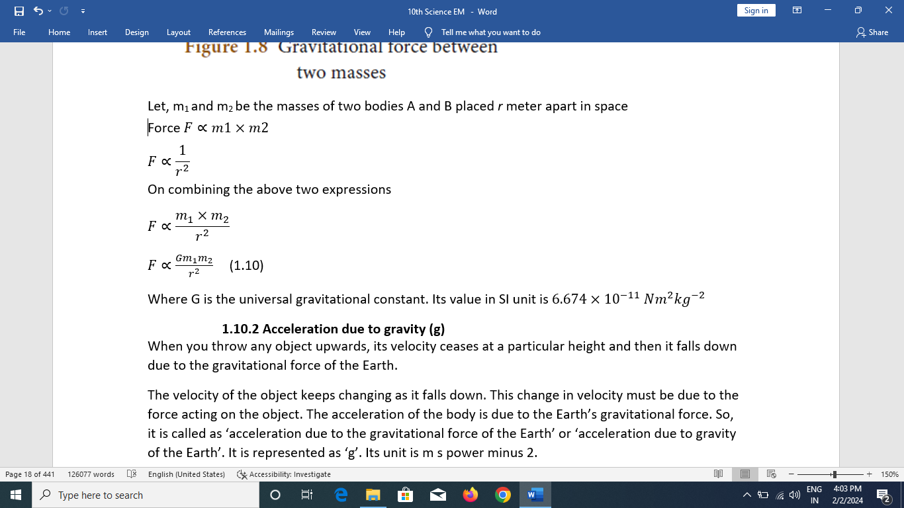
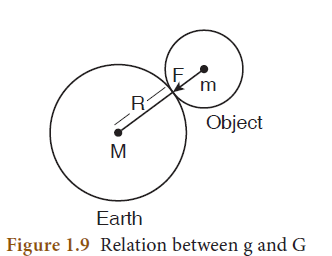
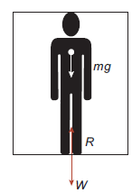

(b) Unbalanced forces – Action of a lever
(c) Like parallel forces
If the resultant force of all the forces acting on a body is equal to zero, then the body will be in equilibrium. Such forces are called balanced forces. If the resultant force is not equal to zero, then it causes the motion of the body due to unbalanced forces
Examples: Drawing water from a well, force applied with a crowbar, forces on a weight balance, etcetera.
A system can be brought to equilibrium by applying another force, which is equal to the resultant force in magnitude, but opposite in direction. Such force is called as ‘Equilibrant’.
Have you observed the position of the handle in a door? It is always placed at the edge of door and not at some other place. Why? Have you tried to push a door by placing your hand closer to the hinges or the fixed edge? What do you observe?
The door can be easily opened or closed when you apply the force at a point far away from the fixed edge. In this case, the effect of the force you apply is to turn the door about the fixed edge. This turning effect of the applied force is more when the distance between the fixed edge and the point of application of force is more.
Figure 1.3 Rotating effect of a force

The axis of the fixed edge about which the door is rotated is called as the ‘axis of rotation’. Fix one end of a rod to the floor/wall and apply a force at the other end tangentially. The rod will be turned about the fixed point is called as ‘point of rotation’.
The rotating or turning effect of a force about a fixed point or fixed axis is called moment of the force about that point or torque(τ). It is measured by the product of the force (F) and the perpendicular distance (d) between the fixed point or the fixed axis and the line of action of the force.
τ = F × d (1.2)
Torque is a vector quantity. It is acting along the direction, perpendicular to the plane containing the line of action of force and the distance. Its SI unit is Newton metre.
Couple: Two equal and unlike parallel forces applied simultaneously at two distinct points constitute a couple. The line of action of the two forces does not coincide. It does not produce any translatory motion since the resultant is zero. But a couple results in causes the rotation of the body. Rotating effect of a couple is known as moment of a couple.
Examples: Turning a tap, winding or unwinding a screw, spinning of a top, etcetera.
Moment of a couple is measured by the product of any one of the forces and the perpendicular distance between the line of action of two forces. The turning effect of a couple is measured by the magnitude of its moment.
Moment of a couple = Force × perpendicular distance between the line of action of forces
M = F × S (1.3)
The unit of moment of a couple is newton metre (N m) in SI system and dyne centi metre in CGS system.
By convention, the direction of moment of a force or couple is taken as positive if the body is rotated in the anti-clockwise direction and negative if it is rotate in the clockwise direction. They are shown in
Figures 1.4 (a and b)

1. Gears:
A gear is a circular wheel with teeth around its rim. It helps to change the speed of rotation of a wheel by changing the torque and helps to transmit power.
2. Sea-saw
Most of you have played on the sea-saw. Since there is a difference in the weight of the persons sitting on it, the heavier person lifts the lighter person. When the heavier person comes closer to the pivot point (fulcrum) the distance of the line of action of the force decreases. It causes less amount of torque to act on it. This enables the lighter person to lift the heavier person.
3. Steering Wheel
A small steering wheel enables you to manoeuvre a car easily by transferring a torque to the wheels with less effort.
When a number of like or unlike parallel forces act on a rigid body and the body is in equilibrium, then the algebraic sum of the moments in the clockwise direction is equal to the algebraic sum of the moments in the anticlockwise direction. In other words, at equilibrium, the algebraic sum of the moments of all the individual forces about any point is equal to zero.

In the illustration given in figure 1.5, the force F one produces an anticlockwise rotation at a distance d one from the point of pivot P (called fulcrum) and the force F two produces a clockwise rotation at a distance d two from the point of pivot P. The principle of moments can be written as follows:
Moment in clockwise direction = Moment in anticlockwise direction
F1 × d1 = F2 × d2 (1.4)
According to this law, “the force acting on a body is directly proportional to the rate of change of linear momentum of the body and the change in momentum takes place in the direction of the force”.
This law helps us to measure the amount of force. So, it is also called as ‘law of force’. Let, ‘m’ be the mass of a moving body, moving along a straight line with an initial speed ‘u’ After a time interval of ‘t’, the velocity of the body changes to ‘v’ due to the impact of an unbalanced external force F.
Initial momentum of the body P initial = m u
Final momentum of the body P final = m v
Change in momentum Δp = P final minus P initial
= m v minus m u
By Newton’s second law of motion,
Force, F is proportional to rate of change of momentum
Here, k is the proportionality constant.
(1.5)
Since, acceleration = change in velocity/ time,
Hence, we have
F= m times a (1.6)
Force = mass × acceleration
No external force is required to maintain the motion of a body moving with uniform velocity. When the net force acting on a body is not equal to zero, then definitely the velocity of the body will change. Thus, change in momentum takes place in the direction of the force. The change may take place either in magnitude or in direction or in both.
Force is required to produce the acceleration of a body. In a uniform circular motion, even though the speed (magnitude of velocity) remains constant, the direction of the velocity changes at every point on the circular path. So, the acceleration is produced along the radius called as centripetal acceleration. The force, which produces this acceleration is called as centripetal force, about which you have learnt in class IX.
Units of force: SI unit of force is newton (N) and in C.G.S system its unit is dyne.
Definition of 1 newton (N): The amount of force required for a body of mass 1 kiloram produces an acceleration of 1 metre second power minus two, 1 N = 1 kilogram metre second power minus two
Unit force: Definition of 1 dyne: The amount of force required for a body of mass 1 gram produces an acceleration of 1 centi metre second power minus two, 1 dyne = 1 gram centi metre second power minus two; also 1 N = 10 power five dyne.
The amount of force required to produce an acceleration of 1 metre second power minus two in a body of mass 1 kilogram is called ‘unit force’.
Gravitational unit of force:
In the SI system of units, gravitational unit of force is kilogram force. In the CGS system its unit is gram force.
1 kilogram force = 1 kilogram × 9.8 metre second power minus two = 9.8 N;
1 gram orce = 1 gram × 980 centi metre second power minus two = 980 dyne
A large force acting for a very short interval of time is called as ‘Impulsive force’. When a force F acts on a body for a period of time t, then the product of force and time is known as ‘impulse’ represented by ‘J’
Impulse, J = F × t (1.7)
By Newton’s second law
F =Δp by t (Δ refers to change) Δp = F × t (1.8)
From 1.7 and 1.8
J = Δp
Impulse is also equal to the magnitude of change in momentum. Its unit is kilogram metre second power minus one or N s.
Change in momentum can be achieved in two ways. They are:
Examples:
Figure 1.6 Example of impulsive force

Newton’s third law states that ‘for every action, there is an equal and opposite reaction. They always act on two different bodies.
If a body A applies a force F A on a body B, then the body B reacts with force F B on the body A, which is equal to F A in magnitude, but opposite in direction. F B = minus F A
Examples:
There is no change in the linear momentum of a system of bodies as long as no net external force acts on them.
Let us prove the law of conservation of linear momentum with the following illustration:

Proof:
Let two bodies A and B having masses m 1 and m 2 move with initial velocity u 1 and u 2 in a straight line. Let the velocity of the first body be higher than that of the second body that is . During an interval of time t second, they tend to have a collision. After the impact, both of them move along the same straight line with a velocity v 1 and v 2 respectively.
Force on body B due to A, F A = m2 times (v 2 minus u 2) divided by t
Force on body A due to B, F B = m 1 times (v 1 minus u 1) divided by t
By Newton’s III law of motion,
Action force = Reaction force
F A = minus F B
m 1 times (v 1 minus u 1) divided by t = minus m2 times (v 2 minus u 2) divided by t
m 1 v 1 + m 2 v 2 = m 1 u 1 + m 2 u 2 equation (1.9)
The above equation confirms in the absence of an external force, the algebraic sum of the momentum after collision is numerically equal to the algebraic sum of the momentum before collision.
Hence the law of conservation linear momentum is proved.
Propulsion of rockets is based on the law of conservation of linear momentum as well as Newton’s III law of motion. Rockets are filled with a fuel (either liquid or solid) in the propellant tank. When the rocket is fired, this fuel is burnt and a hot gas is ejected with a high speed from the nozzle of the rocket, producing a huge momentum. To balance this momentum, an equal and opposite reaction force is produced in the combustion chamber, which makes the rocket project forward.
While in motion, the mass of the rocket gradually decreases, until the fuel is completely burnt out. Since, there is no net external force acting on it, the linear momentum of the system is conserved. The mass of the rocket decreases with altitude, which results in the gradual increase in velocity of the rocket. At one stage, it reaches a velocity, which is sufficient to just escape from the gravitational pull of the Earth. This velocity is called escape velocity. (This topic will be discussed in detail in higher classes).
This law states that every particle of matter in this universe attracts every other particle with a force. This force is directly proportional to the product of their masses and inversely proportional to the square of the distance between the centers of these masses. The direction of the force acts along the line joining the masses.
Force between the masses is always attractive and it does not depend on the medium where they are placed.

Let, m 1 and m 2 be the masses of two bodies A and B placed r meter apart in space

Where Gravity is the universal gravitational constant. Its value in SI unit is
When you throw any object upwards, its velocity ceases at a particular height and then it falls down due to the gravitational force of the Earth.
The velocity of the object keeps changing as it falls down. This change in velocity must be due to the force acting on the object. The acceleration of the body is due to the Earth’s gravitational force. So, it is called as ‘acceleration due to the gravitational force of the Earth’ or ‘acceleration due to gravity of the Earth’. It is represented as ‘g’. Its unit is m s power minus 2.
Mean value of the acceleration due to gravity is taken as 9.8 m s power minus 2 on the surface of the Earth. This means that the velocity of a body during the downward free fall motion varies by
9.8 m s power minus 1 for every 1 second. However, the value of ‘g’ is not the same at all points on the surface of the earth.
When a body is at rests on the surface of the Earth, it is acted upon by the gravitational force of the Earth. Let us compute the magnitude of this force in two ways. Let, M be the mass of the Earth and m be the mass of the body. The entire mass of the Earth is assumed to be concentrated at its centre. The radius of the Earth is R = 6378 km (= 6400 km approximately). By Newton’s law of gravitation, the force acting on the body is given by F = GMm divided by R power 2 equation 1.11

Here, the radius of the body considered is negligible when compared with the Earth’s radius. Now, the same force can be obtained from Newton’s second law of motion. According to this law, the force acting on the body is given by the product of its mass and acceleration (called as weight). Here, acceleration of the body is under the action of gravity hence a = g
F=m a = m g
F = weight = m g equation (1.12)
Comparing equations (1.7) and (1.8), we get
mg=GMm divided by R power two equation 1.13
Acceleration due to gravity
g =GMm divided by R power two equation 1.14
1.10.4 Mass of the Earth (M)
Rearranging the equation (1.14), the mass of the Earth is obtained as follows:
Mass of the Earth M = g R power 2 by G
Substituting the known values of g, R and G, you can calculate the mass of the Earth as
M = 5.972 × 10 power 24 kg
Since, g depends on the geometric radius of the Earth, (g is proportional 1 by R power 2), its value changes from one place to another on the surface of the Earth. Since, the geometric radius of the Earth is maximum in the equatorial region and minimum in the polar region, the value of g is maximum in the polar region and minimum at the equatorial region.
When you move to a higher altitude from the surface of the Earth, the value of g reduces. In the same way, when you move deep below the surface of the Earth, the value of g reduces. (This topic will be discussed in detail in the higher classes). Value of g is zero at the centre of the Earth.
Mass: Mass is the basic property of a body. Mass of a body is defined as the quantity of matter contained in the body. Its SI unit is kilogram (kg).
Weight: Weight of a body is defined as the gravitational force exerted on it due to the Earth’s gravity alone.
Weight = Gravitational Force
= mass (m) × acceleration due to gravity (g).
g = acceleration due to gravity for Earth (at sea level) = 9.8 m s power minus 2.
Weight is a vector quantity. Direction of weight is always towards the centre of the Earth. SI unit of weight is newton (N). Weight of a body varies from one place to another place on the Earth since it depends on the acceleration due to gravity of the Earth (g) weight of a body is more at the poles than at the equatorial region.
The value of acceleration due to gravity on the surface of the moon is 1.625 m s power minus-2. This is about 0.1654 times the acceleration due to gravity of the Earth. If a person whose mass is 60 kg stands on the surface of Earth, his weight would be 588 N (W = mg = 60 × 9.8). If the same person goes to the surface of the Moon, he would weigh only 97.5 N
(W = 60 × 1.625). But his mass remains the same (60 kg) on both the Earth and the Moon.
The weight that you feel to possess during up and down motion, is not same as your actual weight. Apparent weight is the weight of the body acquired due to the action of gravity and other external forces acting on the body.
Let us see this from the following illustration:

Figure 1.10 A person in a moving lift
Let us consider a person of mass m, who is travelling in lift. The actual weight of the person is
W = mg, which is acting vertically downwards. The reaction force exerted by the lift’s surface ‘R’, taken as apparent weight is acting vertically upwards.
Let us see different possibilities of the apparent weight 'R' of the person that arise, depending on the motion of the lift; upwards or downwards which are given in Table
Table 1.2 Apparent weight of a person in a moving lift
.